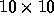

| Logic |
Consider a  grid. Cells in this grid can contain one of five logic operations (AND, OR, NOT, Input, Output). These can be joined together to form a logic circuit. Given a description of a circuit and a set of boolean values, build the logic circuit and execute the input stream against it.
The first line of the input contains a single integer n, which specifies the number of circuits to be processed. There will then be n groups of circuit descriptions and test values.
A circuit is made up of a number of operations. Each line describing an operation begins with three characters: the co-ordinates for a cell, 0-9 on the X-axis then 0-9 on the Y-axis, followed by a single character to represent the operation of that cell (`&' for AND, `|' for OR, `!' for NOT, `i' for Input and `o' for Output). Optionally following each triple is a set of co-ordinate pairs which represent the x and y co-ordinates of cells that take the output of this cells operation as an input for theirs. This (possibly empty) output list is terminated by `..'. The list of operations is terminated by a line containing the word `end'.
Next, for each circuit, comes the set of test values. The first line contains an integer t which gives the number of test cases your program must run. Next, there are t lines, each line containing a sequence of `0' and `1' characters symbolising the input values for one test case. The number of inputs will always correspond to the number of inputs defined by the circuit description. The input values are to be applied to the inputs in the order in which the input operations were defined in the circuit description.
The next circuit description, if any, will then follow.
For each circuit, your program should output one line for each test case given in the input. The line should contain one `0' or `1' character for each output defined by the circuit description in the order in which the outputs were defined.
Your program should output a blank line after each set of test cases.
1 00i 11 13 .. 02i 11 13 .. 11& 21 .. 21o .. 13| 23 .. 23o .. end 4 00 01 10 11
00 01 01 11
Notes:
Hint: Sample input specifies a circuit consiting of an `AND' and an `OR' operation in parallel both fed from the same two inputs:
+---------\
3 | |OR #----------OUT(2)
| +---/
| |
2 IN(2)----------+
| |
+---------\
1 | |AND#----------OUT(1)
+---/
|
0 IN(1)---------+
0 1 2
In grid terms this is two inputs at 0,0 and 1,0. The first input feeds the AND operation at 1,1 and the OR operation at 1,3. The second input operation feeds the second input for the same AND and OR operations. The AND operation then feeds an output operation at 2,1. The OR operation also feeds an output operation, this one at 2,4.